Request, review, and decide on expenses — multi-tenant, secure by default, and fully responsive from desktop to phone.
72-hour take-home submission
Next.js · Supabase (Postgres + RLS) · Vercel · Sentry
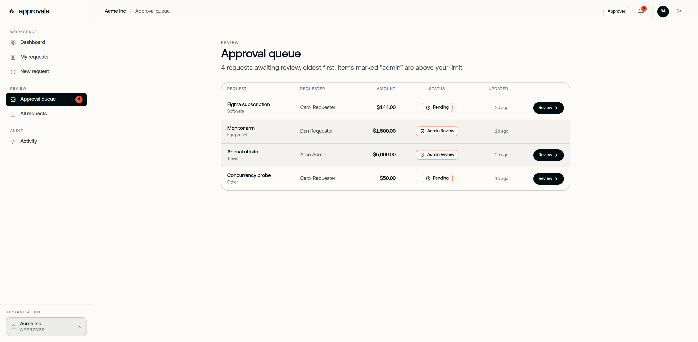
Small teams approve money over email and chat — no trail, no accountability, no status. In fintech, an approval with no immutable record is a compliance failure, not an inconvenience.
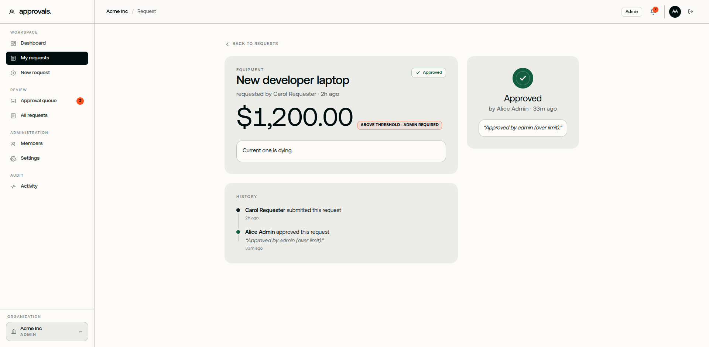
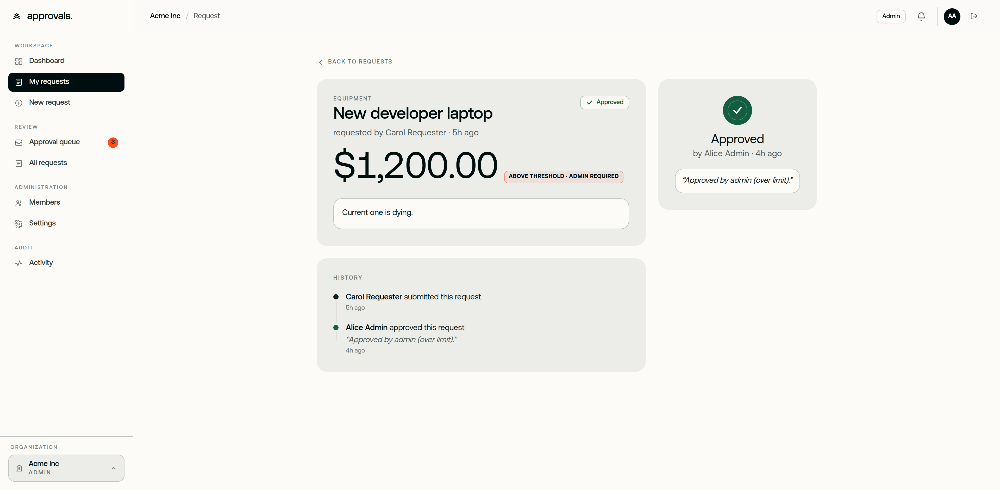
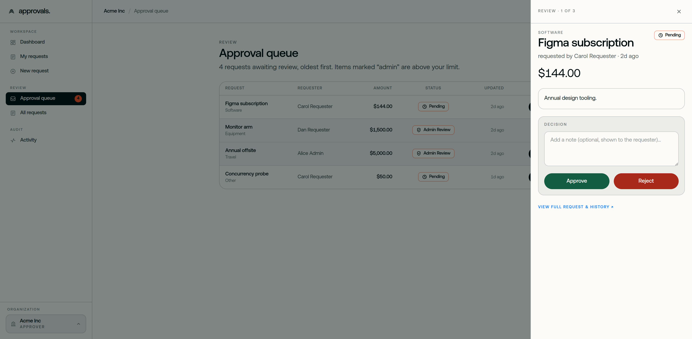
The same flat, ink-on-paper system reflows to any width — no feature dropped, no separate mobile theme, an approver can clear the queue from a phone.
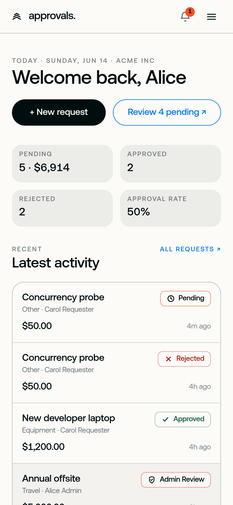
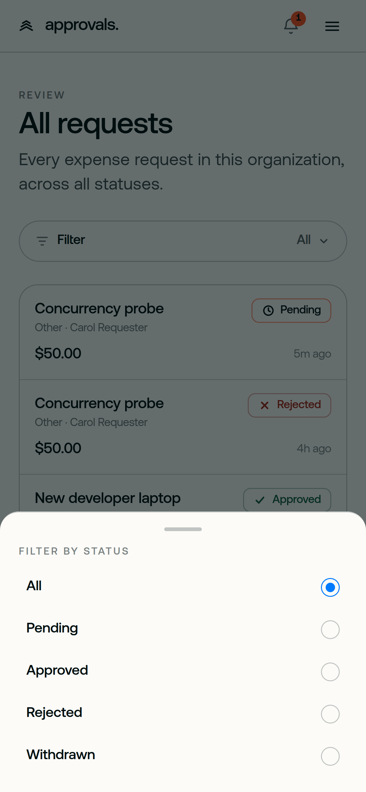
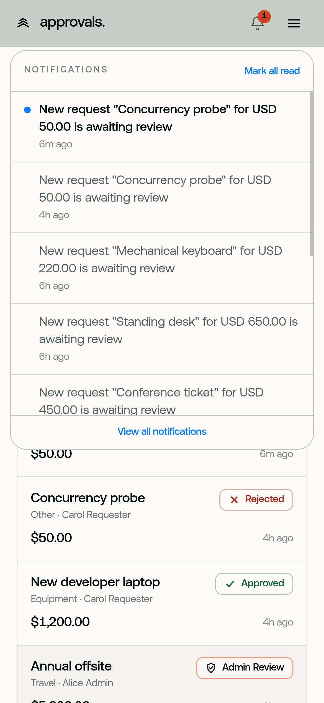
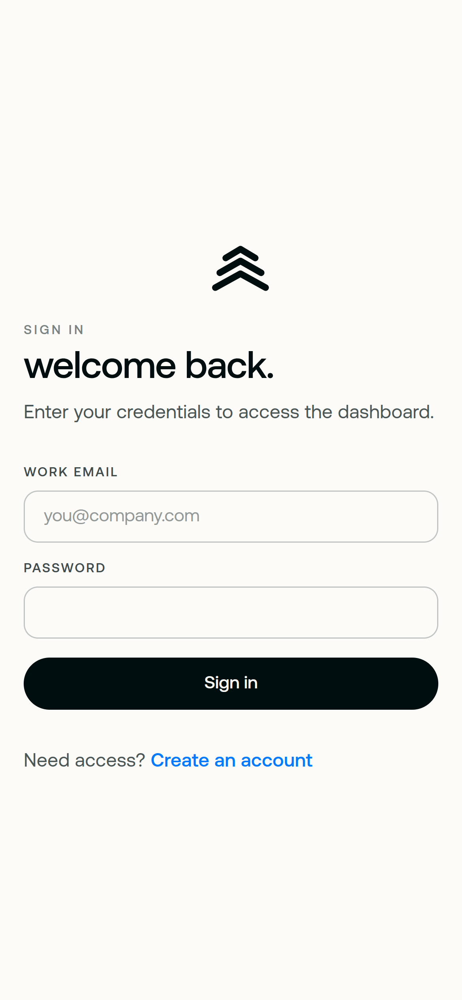
Tables become tap-friendly cards; the four-stat row stacks 2×2; nothing scrolls sideways.
Filters open as a bottom sheet with a grab handle; notifications as an anchored drawer — not a new page.
44px minimum hit areas, 100dvh sheets, and safe-area-inset padding for the home bar.
Same tokens, type and status language as desktop — accessibility and contrast hold at every width.
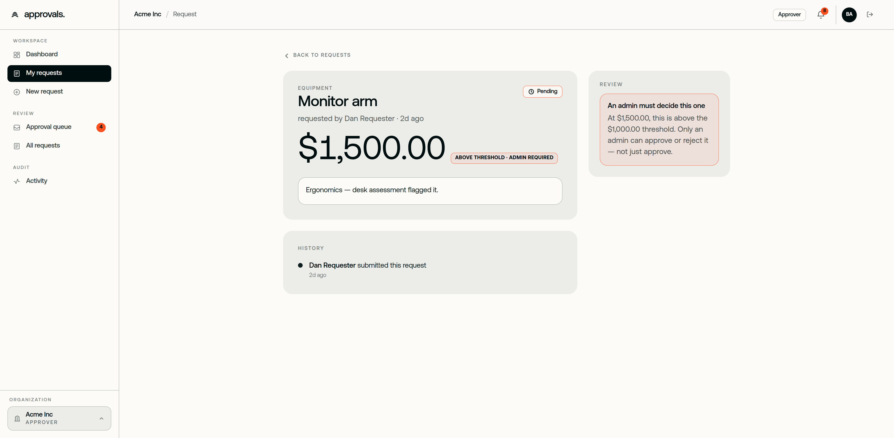
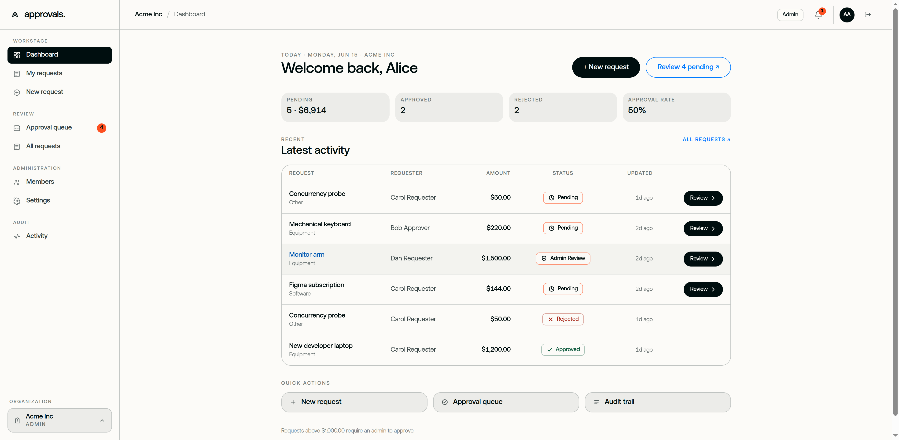
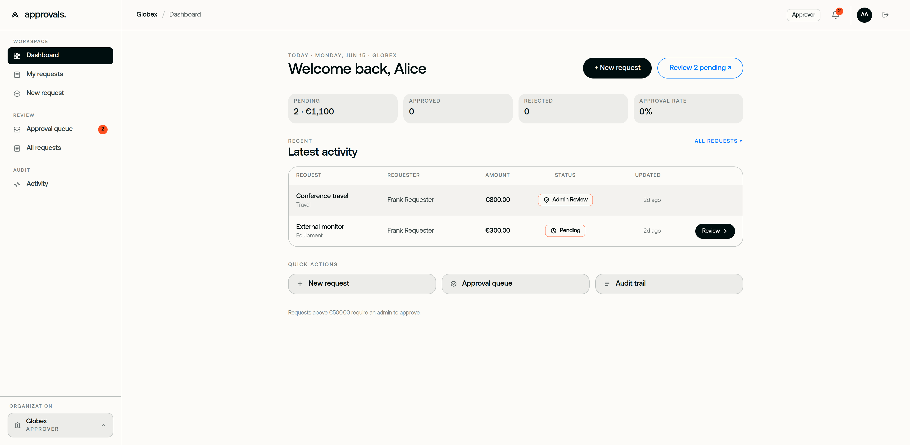
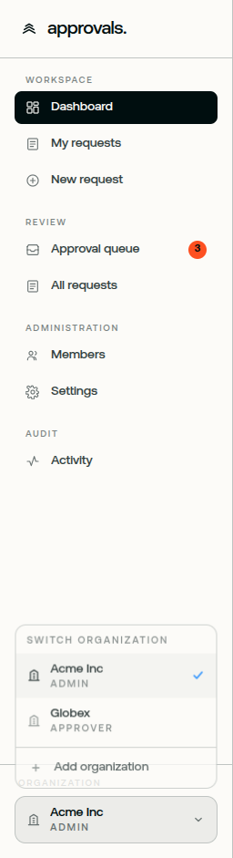
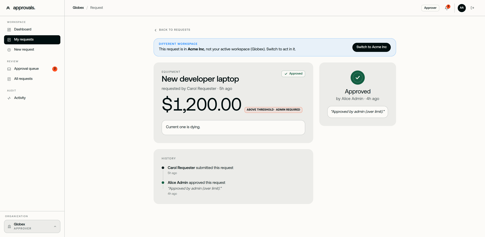
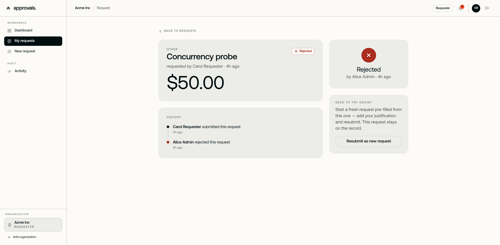
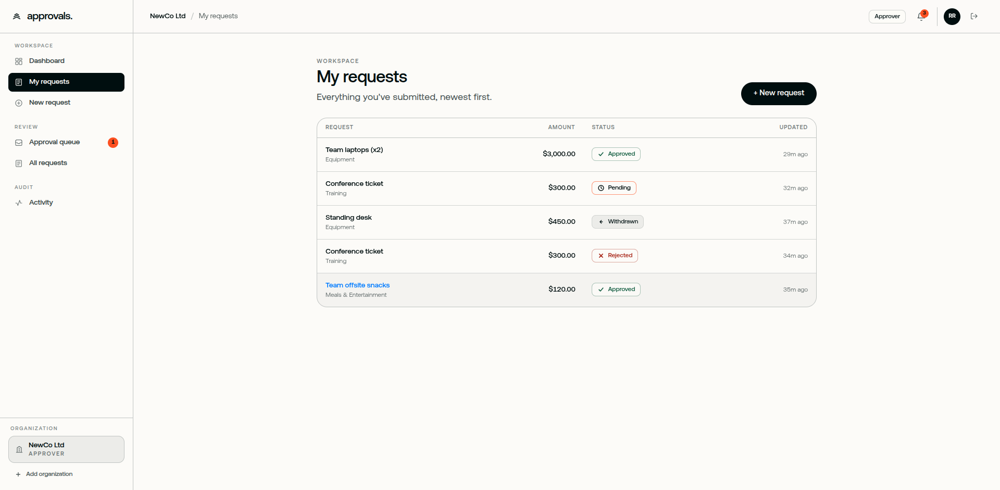
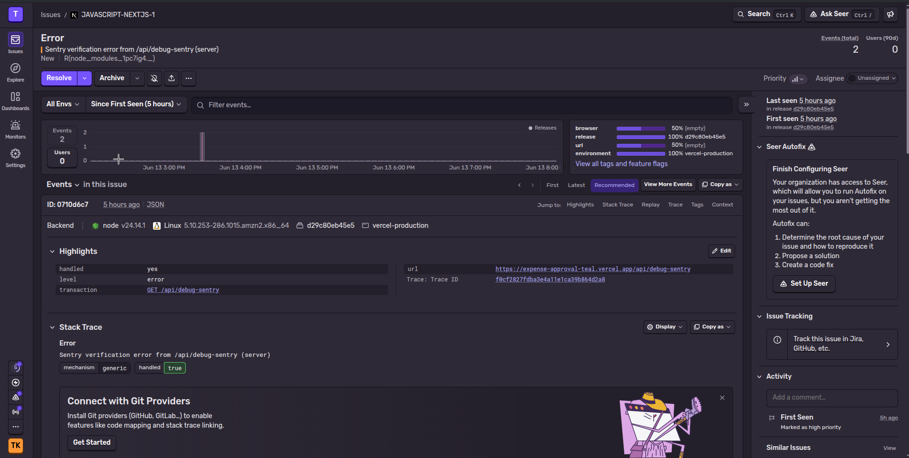
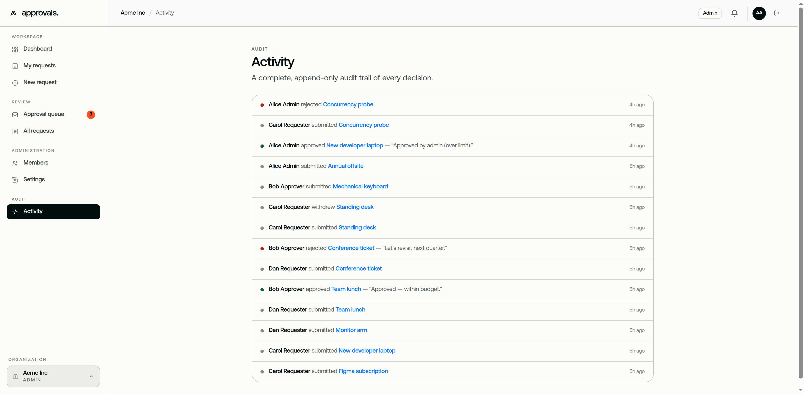
A second required actor inside the existing decide_request RPC: above a higher tier, the status flip waits for two distinct approvers — same transaction, same audit log, no new surface.
A delegations row checked inside is_org_approver(), so an out-of-office approver’s authority temporarily passes to a delegate — enforced in RLS, not the UI.
These are seeded demo accounts on a non-routable .test domain — password-reset and other email flows won’t deliver. Sign in directly with the credentials above.
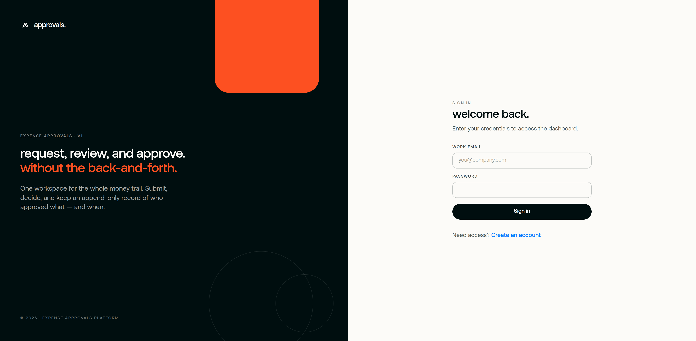
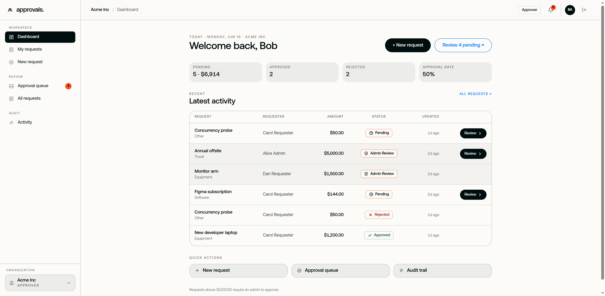